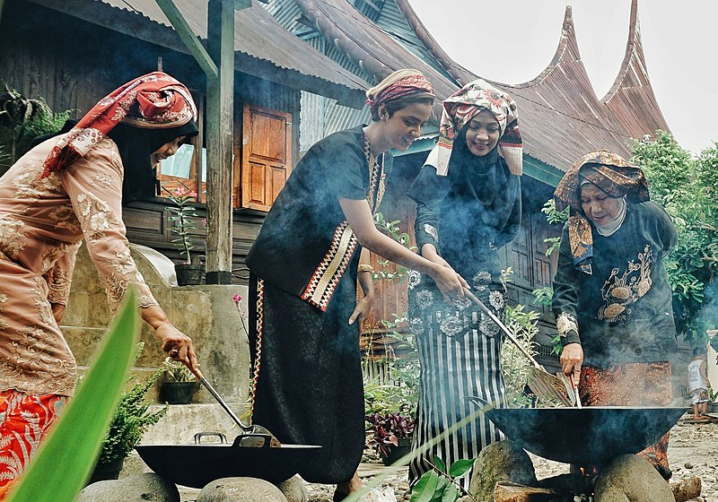
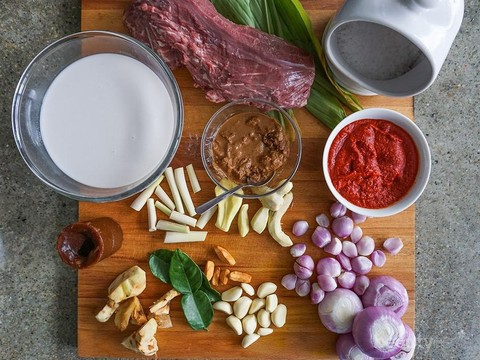

Sejarah

Asal usul rendang ditelusuri berasal dari Sumatra, khususnya Minangkabau. Bagi masyarakat Minang, rendang sudah ada sejak dahulu dan telah menjadi masakan tradisi yang dihidangkan dalam berbagai acara adat dan hidangan keseharian. Sebagai masakan tradisi, rendang diduga telah lahir sejak orang Minang menggelar acara adat pertamanya. Kemudian seni memasak ini berkembang ke kawasan serantau berbudaya Melayu lainnya; mulai dari Mandailing, Riau, Jambi, hingga ke negeri seberang di Negeri Sembilan yang banyak dihuni perantau asal Minangkabau. Karena itulah rendang dikenal luas baik di Sumatra dan Semenanjung Malaya.
Selain pada acara adat, rendang juga menjadi pilihan menu saat mengolah daging kurban yang melimpah saat hari raya Idul Adha. Rendang juga menjadi makanan yang disajikan khusus untuk hari raya Idul Fitri. Rendang juga telah menjadi salah satu pilihan barang bantuan yang dikirimkan oleh Pemerintah Provinsi Sumatra Barat sebagai bantuan pangan bagi korban bencana di daerah lain. Hal ini pertama kali dilakukan pada tahun 2016 saat terjadi gempa bumi di Pidie Jaya, Aceh dan dilakukan pula pada gempa bumi Lombok 2018.
Jenis
Dalam memasak daging berbumbu dalam kuah santan, jika ditinjau dari kandungan cairan santan, sebenarnya terdapat tiga tingkat tahapan, mulai dari yang terbasah berkuah hingga yang terkering: gulai—kalio—rendang. Dari pengertian ini rendang sejati adalah rendang yang paling rendah kandungan cairannya. Akan tetapi, secara umum dikenal ada dua macam jenis rendang: rendang kering dan basah.
Rendang Kering
Rendang kering adalah rendang sejati dalam tradisi memasak Minang. Rendang ini dimasak dalam waktu berjam-jam lamanya hingga santan mengering dan bumbu terserap sempurna. Rendang kering dihidangkan untuk perhelatan istimewa, seperti upacara adat, kenduri, atau menyambut tamu kehormatan. Rendang kering biasanya berwarna lebih gelap agak cokelat kehitaman. Jika dimasak dengan tepat, rendang kering dapat tahan disimpan dalam suhu ruangan selama tiga sampai empat minggu, bahkan dapat bertahan hingga lebih dari sebulan jika disimpan di kulkas, dan enam bulan jika dibekukan. Beberapa kalangan berpendapat bahwa cita rasa rendang asli Minang adalah yang paling lezat dan tiada dua—jauh berbeda dengan rendang di sejumlah kawasan Melayu lainnya.
Rendang basah atau Kalio
Rendang basah, atau lebih tepatnya disebut kalio, adalah rendang yang dimasak dalam waktu yang lebih singkat, santan belum begitu mengering sempurna, dan dalam suhu ruangan hanya dapat bertahan dalam waktu kurang dari satu minggu. Rendang basah berwarna cokelat terang keemasan dan lebih pucat.
Cara Memasak

Rendang adalah masakan yang kaya akan kandungan bumbu rempah. Selain bahan dasar daging, rendang menggunakan santan kelapa (karambia), dan campuran dari berbagai bumbu khas yang dihaluskan di antaranya cabai (lado), serai, lengkuas, kunyit, jahe, bawang putih, bawang merah dan aneka bumbu lainnya yang biasanya disebut sebagai pemasak. Keunikan rendang adalah penggunaan bumbu-bumbu alami, yang bersifat antiseptik dan membunuh bakteri patogen sehingga bersifat sebagai bahan pengawet alami. Bawang putih, bawang merah, jahe, dan lengkuas diketahui memiliki aktivitas antimikroba yang kuat. Tidak mengherankan jika rendang dapat disimpan satu minggu hingga empat minggu.
Proses memasak rendang asli dapat menghabiskan waktu berjam-jam (biasanya sekitar empat jam), karena itulah memasak rendang memerlukan waktu dan kesabaran. Potongan daging dimasak bersama bumbu dan santan dalam panas api yang tepat, diaduk pelan-pelan hingga santan dan bumbu terserap daging. Setelah mendidih, apinya dikecilkan dan terus diaduk hingga santan mengental dan menjadi kering. Memasak rendang harus sabar dan telaten ditunggui, senantiasa dengan hati-hati dibolak-balik agar santan mengering dan bumbu terserap sempurna, tanpa menghanguskan atau menghancurkan daging. Proses memasak ini dikenal dalam seni kuliner modern dengan istilah 'karamelisasi'. Karena menggunakan banyak jenis bumbu, rendang dikenal memiliki cita rasa yang kompleks dan unik.